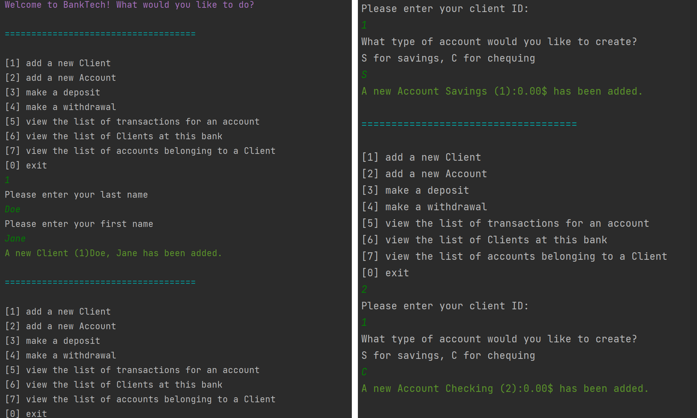
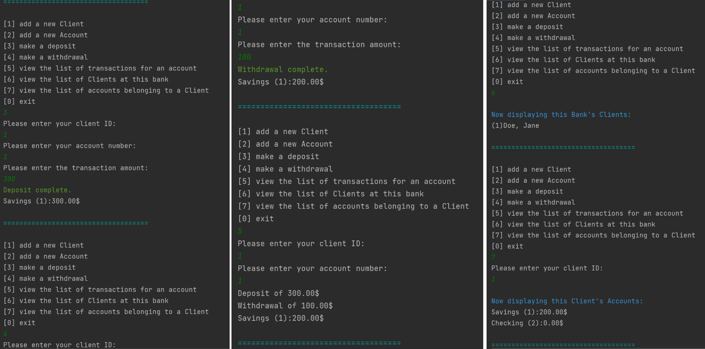

×

Banking
A Java Console Project
Process

This project was my final project for my first semester programming course at Vanier College. It was a very ambitious project at the time since it was my first time designing a fully functional Java project. Before coding, I drew out a diagram to plan out the logic of the program. There were many classes that would have to interact with each other, so this was a helpful step in the process for structuring code from a high level. I then began to code the project in an assembly line fashion. First, I set up every class’s methods and properties, leaving everything empty at first and just making sure the class members were there. Next, I began to add code to each method, coding one functionality at a time. For example, I would code all the methods associated with account creation and make sure everything worked before moving onto coding the withdrawals and transactions.
Intentions
The main intention of this project was to showcase what I had learned in Java and Object-Oriented Programming basics throughout the semester. The goal was to make a banking application that functioned by taking and interpreting user input. The application can perform transactions such as deposits and withdrawals. It can also display lists of accounts associated with the bank, and transactions associated with an account. While making this project, despite it being in the console, I tried to make it as user friendly as possible. I added color to some of the text, especially the error messages and success messages. I also added spacers such as “===” to make the output easier to read. Overall, although I did not yet know how to make a user interface using JavaFX, I tried to maximize intuitiveness for the user as best I could, as practice for when I would be able to design those interfaces.
